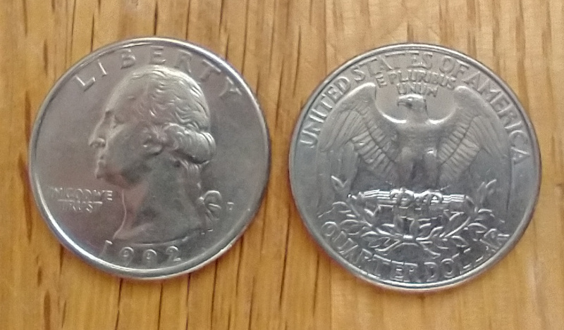
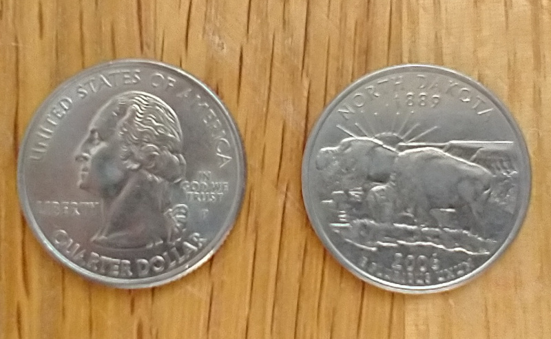
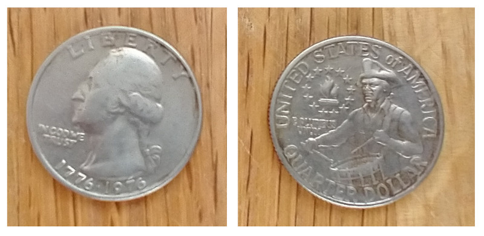

enum Coin {
Penny,
Nickel,
Dime,
Quarter,
}
fn value_in_cents(coin: Coin) -> u8 {
match coin {
Coin::Penny => 1,
Coin::Nickel => 5,
Coin::Dime => 10,
Coin::Quarter => 25,
}
}
enum UsState {
Alabama,
Alaska,
..
}
enum Coin {
Penny,
Nickel,
Dime,
Quarter(UsState),
}
fn value_in_cents(coin: Coin) -> u8 {
match coin {
Coin::Penny => 1,
Coin::Nickel => 5,
Coin::Dime => 10,
Coin::Quarter(state) => {
println!("State quarter from {:?}!", state);
25
}
}
}


enum Coin {
Penny,
Nickel,
Dime,
Quarter(Option<UsState>),
}

enum Series {
Regular,
Bicentennial,
UsStates(UsState),
UsTerritories(UsTerritory),
AmericaTheBeautiful(NationalPark),
AmericanWomen(Woman),
}
enum Coin {
Penny,
Nickel,
Dime,
Quarter(Series),
}
Optionfn plus_one(x: Option<i32>) -> Option<i32> {
match x {
None => None,
Some(i) => Some(i + 1),
}
}
if letfn plus_one(x: Option<i32>) -> Option<i32> {
if let Some(i) = x {
return Some(i + 1);
}
None
}
match armsmatch VALUE {
PATTERN => EXPRESSION,
PATTERN => EXPRESSION,
PATTERN => EXPRESSION,
}
if let expressionsif let PATTERN = VALUE {
...
}
if let is not exhaustive, but can have an else clauseif let PATTERN = VALUE {
...
} else {
...
}
while letwhile let PATTERN = VALUE {
...
}
while let Some(top) = stack.pop() {
println!("{top}");
}
When the match fails, the loop ends.
for loopsfor PATTERN in ITERATOR {
...
}
let v = vec!['a', 'b', 'c'];
for (index, value) in v.iter().enumerate() {
println!("{value} is at index {index}");
}
let statementslet PATTERN = VALUE;
let t = (1, 2, 3);
let (x, y, z) = t;
println!("x: {x}, y: {y}, z: {z}");
let t = (1, 2, 3);
let (x, y) = t;
println!("x: {x}, y: {y}");
❯ cargo run
Compiling pattern-matching v0.1.0 (/home/tim/rust/pattern-matching)
error[E0308]: mismatched types
--> src/main.rs:19:9
|
19 | let (x, y) = t;
| ^^^^^^ - this expression has type `({integer}, {integer}, {integer})`
| |
| expected a tuple with 3 elements, found one with 2 elements
|
= note: expected tuple `({integer}, {integer}, {integer})`
found tuple `(_, _)`
For more information about this error, try `rustc --explain E0308`.
error: could not compile `pattern-matching` due to previous error
let t = (1, 2, 3);
let (x, y, _) = t;
println!("x: {x}, y: {y}");
fn name(PATTERN: TYPE) {
...
}
fn print_coordinates(&(x, y): &(i32, i32)) {
println!("Current location: ({x}, {y})");
}
fn main() {
let point = (3, 5);
print_coordinates(&point);
}
let print_coordinates = |&(x, y): &(i32, i32)| {
println!("Current location: ({x}, {y})");
};
As of Rust 1.59, we can use tuple, slice, and struct patterns as the left-hand side of an assignment.
let (a, b, c, d, e);
(a, b) = (1, 2);
[c, .., d, _] = [1, 2, 3, 4, 5];
Struct { e, .. } = Struct { e: 5, f: 3 };
assert_eq!([1, 2, 1, 4, 5], [a, b, c, d, e]);
let x = 5;
if let Some(x) = y {
println!("{x}");
}
let Some(x) = y;
error[E0005]: refutable pattern in local binding: `None` not covered
--> src/main.rs:41:9
|
41 | let Some(x) = y;
| ^^^^^^^ pattern `None` not covered
|
...
if let x = 5 {
println!("{x}");
}
warning: irrefutable `if let` pattern
--> src/main.rs:37:8
|
37 | if let x = 5 {
| ^^^^^^^^^
|
...
let x = 1;
match x {
1 => println!("one"),
2 => println!("two"),
3 => println!("three"),
_ => println!("anything"),
}
let x = Some(5);
let y = 10;
match x {
Some(50) => println!("Got 50"),
Some(y) => println!("Matched, y = {y}"),
_ => println!("Default case, x = {x:?}"),
}
println!("at the end: x = {x:?}, y = {y}");
use | for or
let x = 1;
match x {
1 | 2 => println!("one or two"),
3 => println!("three"),
_ => println!("anything"),
}
let x = 5;
match x {
1..=5 => println!("one through five"),
_ => println!("something else"),
}
Nicer than 1 | 2 | 3 | 4 | 5
let x = 'c';
match x {
'a'..='j' => println!("early ASCII letter"),
'k'..='z' => println!("late ASCII letter"),
_ => println!("something else"),
}
char valuesstruct Point {
x: i32,
y: i32,
}
fn main() {
let p = Point { x: 0, y: 7 };
let Point { x: a, y: b } = p;
assert_eq!(0, a);
assert_eq!(7, b);
}
struct Point {
x: i32,
y: i32,
}
fn main() {
let p = Point { x: 0, y: 7 };
let Point { x, y } = p;
assert_eq!(0, x);
assert_eq!(7, y);
}
enum Message {
Quit,
Move { x: i32, y: i32 },
Write(String),
ChangeColor(i32, i32, i32),
}
fn main() {
let msg = Message::ChangeColor(0, 160, 255);
...
match msg {
Message::Quit => {
println!("No data to destructure.")
}
Message::Move { x, y } => {
println!("Move x {x} and y {y}")
}
Message::Write(text) => {
println!("Text message: {text}")
}
Message::ChangeColor(r, g, b) => {
println!("red {r}, green {g}, and blue {b}")
}
}
}
fn value_in_cents(coin: Coin) -> u8 {
match coin {
Coin::Penny => 1,
Coin::Nickel => 5,
Coin::Dime => 10,
Coin::Quarter(Series::UsStates(state)) => {
println!("State quarter from {:?}!", state);
25
},
Coin::Quarter(_) => 25,
}
}
let t = (1, 2, 3);
let (x, y, z) = t;
println!("x: {x}, y: {y}, z: {z}");
let reference = &3;
let &value = reference;
println!("value: {value}");
let reference = &3;
let value = *reference;
println!("value: {value}");
fn foo(_: i32, y: i32) {
println!("y parameter: {y}");
}
let t = (1, 2, 3);
match t {
(1, y, _) => println!("x: 1, y: {y}"),
_ => println!("no match"),
}
fn main() {
let _x = 5; // no unused warning
let y = 10; // unused variable warning
}
This won't compile (s is moved into _s)
let s = Some(String::from("Hello!"));
if let Some(_s) = s {
println!("found a string");
}
println!("{:?}", s);
This works fine!
let s = Some(String::from("Hello!"));
if let Some(_) = s {
println!("found a string");
}
println!("{:?}", s);
let t = (1, 2, 3);
let (x, ..) = t;
println!("x: {x}");
let num = Some(4);
match num {
Some(x) if x < 5 => println!("less than five: {x}"),
Some(x) => println!("{x}"),
None => (),
}
If we have this enum defined…
enum Message {
Hello { id: i32 },
}
"Found an id in range: 5"
let msg = Message::Hello { id: 5 };
match msg {
Message::Hello { id: id_value @ 3..=7 } => {
println!("Found an id in range: {id_value}")
},
Message::Hello { id: 10..=12 } => {
println!("Found an id in another range")
}
Message::Hello { id } => {
println!("Found some other id: {id}")
}
}
Message::Hello { id } => {
println!("Found some other id: {id}")
}
is short-hand for
Message::Hello { id: id } => {
println!("Found some other id: {id}")
}